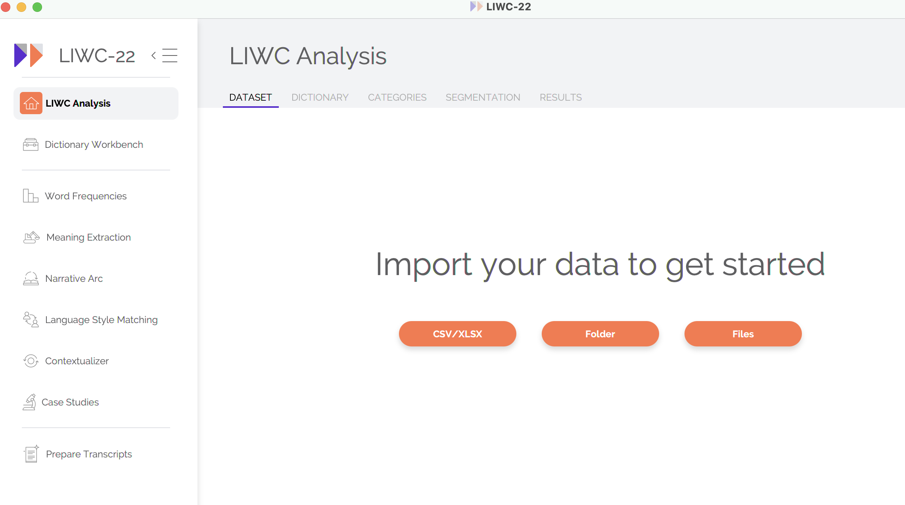
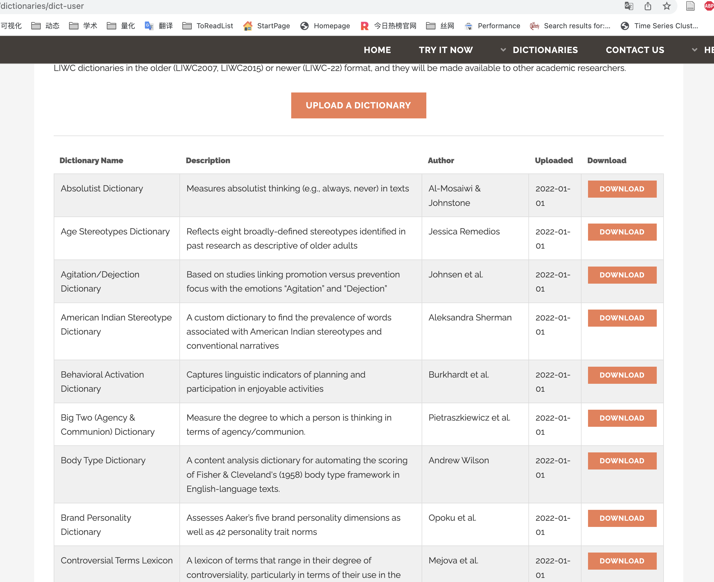
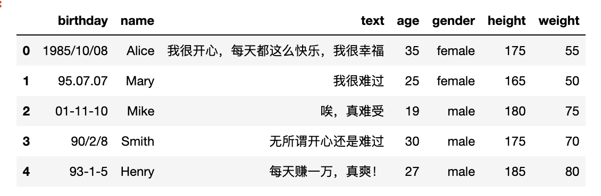
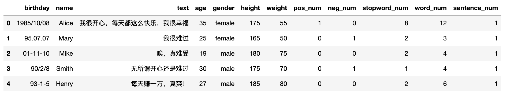

本文原理介绍翻译自 https://www.liwc.app/help/howitworks
对比及Python代码主要是自创作

LIWC是一种付费的文本分析软件，在学界知名度挺高的。今天翻译了LIWC: how it works https://www.liwc.app/help/howitworks ，通过LIWC来侧面加深对 词典情感分析 的理解。
词频：可靠的指标
语言查询和词数统计 (LIWC「Linguistic Inquiry and Word Count」) 的核心逻辑来自数十年的科学研究表明，人们的语言可以提供极其丰富心理状态信息，包括情绪、思维方式和社会关注点。有时，这些见解是相当明显和直截了当的。例如，如果某人使用了很多像 「happy、excited、elated」 这样的词，他们可能会感到快乐，我们可以使用这些信息来可靠地估计他们当前的情绪状态。然而，言语行为和心理之间的关系往往不那么明显。例如，更自信、社会地位更高的人倾向于使用相对较高的 「you」 词，而使用 「me」词的频率相对较低。在这里，数十年的实证研究——尤其是使用 LIWC 作为科学工具的研究——也为我们提供了理解、解释和量化心理、社会和行为现象的专业方法。
但作为算法，实际上主要的计算方法是词频。而这点，借助Python可以完成从数据清洗到数据分析全部过程。
丰富的词典
LIWC-22 带有 100 多个内置字典，用于捕捉人们的社会和心理状态。每本词典都包含一系列单词、词干、表情符号和其他特定的语言结构，这些结构已被识别为反映感兴趣的心理类别。例如，「认知过程cognitive processes」词典包括 1,000 多个条目，这些条目反映了一个人何时通过一般和更具体的方式积极处理信息。 「从属关系affiliation」词典包括超过 350 个条目，这些条目反映了一个人与他人联系的需要，其中包括 「community」 和 「together」 等词。
LIWC 读取给定文本并将文本中的每个单词与字典单词列表进行比较，并计算文本中与每个字典类别匹配的总单词的百分比。例如，如果 LIWC 使用内置的 LIWC-22 词典分析包含 1000 个单词的单个语音，它可能会发现其中 50 个单词与积极情绪有关，10 个单词与从属关系有关。 LIWC 会将这些数字转换为百分比：5.0% 的积极情绪和 1.0% 的从属关系。
请注意，许多 LIWC-22 类别是按层次结构组织的。根据定义，所有愤怒的词都被归类为负面情绪词，而负面情绪词又被归类为情绪词。另请注意，同一个词可能会被分类在多个字典中。例如，「celebrate」一词在积极情绪和成就词典中都有。
下图是liwc用户上传分享的自定义词典，目前有77个。好像需要购买liwc服务，才能下载里面的文件

文本越长越好
不要忘记，LIWC 和所有文本分析工具一样，是一种相对粗糙的工具。它有时会在识别和计算单个单词时出错。考虑一下「mad」这个词——一个在愤怒词典中被计算在内的词。通常，今天，「mad」这个词确实反映了某种程度的愤怒。然而，有时它表达了喜悦（「he’s mad for her.」）或精神不稳定（「mad as hatter」）。幸运的是，这很少成为问题，因为 LIWC 利用了语言使用的概率模型。是的，在给定的句子中，「mad」这个词可能被用来表达积极的情绪。然而，如果作者实际上正在经历积极情绪，他们通常会倾向于使用一个以上的积极情绪词，并且很可能很少使用其他愤怒词，这应该会导致积极情绪得分高而愤怒得分低。要记住的重要一点是，您分析的单词越多，结果就越值得信赖。 10,000 字的文本比 100 字的文本产生的结果可靠得多。任何少于 25-50 个单词的文本都应该以一定的怀疑态度来看待。
至此翻译结束
简单对比：Python与LIWC
| 工具 | 简介 | 算法 | 优势 | 劣势 |
|---|---|---|---|---|
| Python | 编程语言 | 词频(典)法、词嵌入法 | 接近全能, 可以用Python搞定从数据采集、清洗、分析全流程 可以把最新前沿应用到自己研究中 (nature、science、pnas相关文本分析方法的论文会大多会开源自己的Python代码)。 |
有一定的学习门槛 |
| LIWC | 软件 | 主要是词典法 | 学界认可 内置丰富的词典, 拿来即用。 |
不够灵活， 对中文支持不友好，内置词典几乎全是西方语言。 |
考虑数据清洗
综合来看，如果只使用 词频(词典)法 统计某一构念相关词语在文中出现的占比， LIWC 较 Python和R等编程语言有微弱优势。这里需要说明一下，完整的文本(数据)分析包含采集、清洗、分析。其中清洗部分工作量是最大的，数据科学家有个形象的统计，认为清洗占整个数据分析工作量的70%左右。
LIWC的上游环节往往需要借助Python和R等其他语言对原始数据做数据清洗和整理。
如果数据分析的代码量一共有100行，那么清洗的代码可能有70行，数据分析的代码只需再写30行。为了数据清洗任务，你可能不得不学Python，之后可再用LIWC；也可以 LIWC&Python一起用。
好消息
大家可能觉得 词频(词典)法 算法过于粗暴， 通过对LIWC工作原理了解，我们知道LIWC软件底层算法也是词频(词典)法。
现在大家应该对 词频(词典)法 有了新的认识，更加有理论自信，技术自信。而Python对这种算法的运行其实很擅长的，
cntext是我一直在开发更新的一个包，一直想将常见的文本分析代码工作量压缩至 个位行数。
功能模块含
-
stats 文本统计指标
- 词频统计
- 可读性
- 内置pkl词典
- 情感分析
-
dictionary构建词表(典)
- Sopmi 互信息扩充词典法
- W2Vmodels 词向量扩充词典法
- Glove Glove词向量模型
-
similarity 文本相似度
-
cos相似度
-
jaccard相似度
-
编辑距离相似度
-
mind 计算文本中的认知方向（态度、偏见）
比如对一条测试数据test_text， 使用 词频(词典)法 做情感分析，代码量不到5行
import cntext as ct
# 自定义情感词典
diction = {'pos': ['高兴', '快乐', '分享'], 'neg': ['难过', '悲伤']}
# 测试数据
test_text = '我今天得奖了，很高兴，我要将快乐分享大家。'
# 情感计算
ct.sentiment(text=test_text, diction=diction, lang='chinese')
Run
{'pos_num': 3,
'neg_num': 0,
'stopword_num': 8,
'word_num': 14,
'sentence_num': 1}
即时对一个csv或excel文件，某一列文本做情感分析，代码量不超过10行。我们先看一下数据
import pandas as pd
df = pd.read_csv('test_sentiment_texts.csv')
df.head()
Run

对text列做情感分析，使用自定义情感词典
import pandas as pd
import cntext as ct
# 导入自定义情感词典
diction = {'pos': ['高兴', '快乐', '分享'], 'neg': ['难过', '悲伤']}
# 情感计算
def diy_senti(text):
return pd.Series(ct.sentiment(text=text, diction=diction, lang='chinese'))
#读取数据
df = pd.read_csv('test_sentiment_texts.csv')
#选中text列，对该列进行情感计算，得到dataframe
senti_df = df['text'].apply(diy_senti)
#将df和senti_df两个dataframe合并
result_df = pd.concat([df, senti_df], axis=1)
#存储 & 显示结果
result_df.to_csv('result_of_sentiment_texts.csv')
result_df.head()
Run
